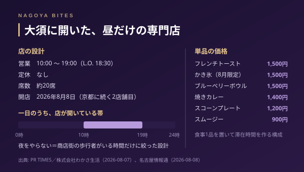

今日の1軒
大須の食べ歩きに1,500円のかき氷が加わる
2026年8月8日、大須商店街にブルーベリー専門のカフェが開いた。サプリメントで知られる会社が京都に続いて出した2店舗目で、フレンチトーストもかき氷も1,500円。100円台から食べ歩ける大須の相場からすると、明らかに一段高い。ではなぜその値段で成立するのか。約20席という規模と、昼だけを取りにいく営業時間から読む。

この記事はNAGOYA BITES — 名古屋の厳選1,100店超を業界視点で紹介するグルメガイドの一部です。
2026年8月7日に出たリリースによると、ブルーベリー専門の「WAKASA Cafe 名古屋大須店」が8日にオープンする。運営はサプリメントで知られる株式会社わかさ生活（京都市下京区）で、京都に続く2店舗目にあたる。翌8日には地元媒体が実地のレポートを出しており、場所は大須2丁目、大須観音の東側にあたる商店街の中。約20席で、営業は10時から19時、ラストオーダーは18時30分。定休日はない。
価格帯の読み方——単品1,500円は何の値段か
メニューはブルーベリーフレンチトースト1,500円、ブルブルくん焼きカレー1,400円、ブルーベリーボウル1,500円、8月限定のブルーベリーみるくかき氷1,500円。地元媒体の記事ではスコーンプレート1,200円、ブルーベリースムージー900円も確認できる。
大須の食べ歩きは、数百円の単品を歩きながら重ねるのが基本の相場だ。その中で1,500円は明らかに浮く。ただしこれはコース料理の値段ではなく、素材を一つに絞った専門店の単品価格だと考えたほうが読み違えない。原料そのものを持っている会社が直営でやる店なので、値段の説明が「うちの素材だから」で完結する。アラカルトを何品も並べて客単価を積むのではなく、一品で完結させて回転を落とさない作りになっている。
その中で焼きカレー1,400円が置いてあるのは意味がある。甘いものだけの構成だと滞在時間が短くなり、席が空きすぎる時間帯が出る。食事を一品挟むと昼の時間帯が持つ。
オペの裏側——夜をやらない設計
この店で最も特徴的なのは、19時で閉めることだ。大須は夜になると別の街になるが、そこは取りにいかない。10時から19時に絞れば、シフトは昼帯に集約でき、夜の人件費と酒類のオペレーションを丸ごと持たなくて済む。定休日をなくして週7日の歩行者需要を拾うほうが、商店街の立地では効率がいい。
約20席という規模も、この時間割と噛み合っている。20席で単価1,500円なら、無理に回転を上げなくても昼の売上が立つ。逆に言えば、席数が少ないぶん繁忙の時間帯は詰まる。オープン直後の土日と、かき氷が動く昼過ぎは待ちが出ると見ておいたほうがいい。予約という運用の店ではないので、時間をずらすのが唯一の手になる。
シーン適性——どこで使う店か
向いているのは、大須の食べ歩きの途中で座る一軒目、もしくは歩き疲れたあとの休憩だ。一人でも入りやすい規模で、デートの合間にも使える。逆に、19時にラストオーダーが終わる以上、夜の会食や接待の器には最初からなっていない。夜に大須で飲むなら、ここは前半に組み込む店になる。
直近の名古屋は、8月2日に近隣で39度台が観測されるような暑さが続いている。冷たいものに1,500円を払うかどうかは分かれるところだが、この一杯を目的地にして歩く日と、通りすがりに寄る日とでは、同じ値段の見え方がまったく違う。
Inside Perspective — 業界人の目利き
- 単品1,500円はコースの値段ではなく、素材を一つに絞った専門店の単品価格。原料を持つ会社の直営なので値段の説明が素材で完結し、アラカルトを積まず一品で完結させる作りになっている
- 10時から19時、定休日なしという時間割は、夜の人件費と酒類のオペを持たない代わりに週7日の歩行者需要を拾う設計。約20席なら回転を上げなくても昼の売上が立つ
- 予約運用の店ではないため、混む時間帯（開店直後の土日・かき氷が動く昼過ぎ）は時間をずらすしかない。19時ラストオーダーなので夜の会食や接待には使えず、食べ歩きの前半に置く店
WAKASA Cafe 名古屋大須店
2026年8月8日オープン。サプリメントで知られる株式会社わかさ生活が手がけるブルーベリー専門カフェで、京都に続く2店舗目。ブルーベリーフレンチトースト1,500円、ブルブルくん焼きカレー1,400円、8月限定ブルーベリーみるくかき氷1,500円。約20席、10:00〜19:00（L.O.18:30）、定休日なし。